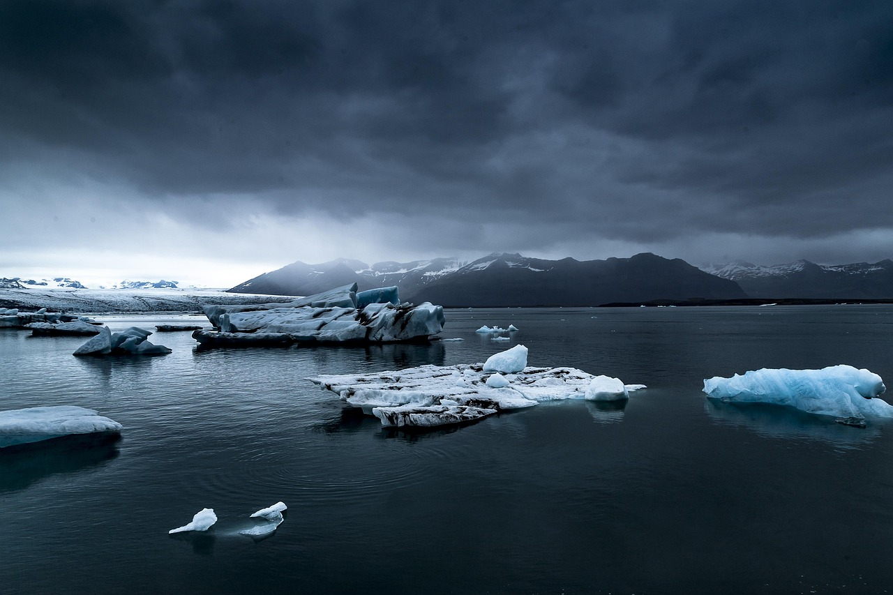

Museo De Paleontología SEMAHN
-
Inicio
-
Otras publicaciones
Museo De Paleontología SEMAHN
Inicio
Otras publicaciones

Las bajas temperaturas ocurridas durante los intervalos glaciares, ocasionaron que gran parte del agua de mar se congelara, bajando con ello el nivel de los océanos. El descenso del nivel del mar dejó al descubierto grandes extensiones de tierra que antes estaban bajo las aguas marinas. Uno de estos puentes fue Beringia, que conectó América del Norte con Asia. Estos puentes fueron importantes para el intercambio de fauna entre un lugar y otro. Por ejemplo, algunos animales, como osos, mamuts, bisontes y el ser humano cruzaron desde Asia. Por el contrario, camellos y caballos cruzaron desde América hacia Asia, para posteriormente colonizar Europa y África donde evolucionaron en nuevas especies. Durante el pleistoceno se terminó de formar otro importante puente de tierra: el istmo de Panamá, el cual conectó América del Norte con América del Sur, dos sub-continentes separados entre sí durante millones de años. Aunque este puente comenzó a formarse aproximadamente hace 6 millones de años, el cierre completo se dio iniciando el Pleistoceno, hace 2.58 millones de años, lo que propició un intercambio de fauna llamado Gran Intercambio Biótico Americano.
El clima del pasado puede conocerse a través del análisis de isótopos de oxígeno atrapado en sedimentos marinos o en los núcleos de hielo del polo norte; a través del estudio de los sedimentos, diatomeas y polen acumulado en el fondo de lagos y lagunas, o a través de los fósiles de las plantas encontradas en un área determinada (la vegetación tiene una estrecha relación con el clima). Gracias a ello, se sabe que durante el Pleistoceno hubieron cerca de 20 periodos fríos o glaciares, intercedidos cada uno de ellos por periodos cálidos o interglaciares. Algunas teorías que tratan de explicar lo que causo esas variaciones climáticas incluyen causas espaciales, como la inclinación del eje de la Tierra y los periodos de translación alrededor del Sol, que influyen en la forma y cantidad en que nuestro planeta recibe la radiación solar. Uno de los primeros en proponer que la órbita de nuestro planeta influía en el clima global fue el astrónomo serbio Milutin Milankovitch.

Los marcados cambios climáticos ocurridos en el Pleistoceno favorecieron la coexistencia de especies que hoy en día son alopátricas y presumiblemente incompatibles ecológicamente; en términos de patrones de distribución son llamadas comunidades “no armónicas”. Estas asociaciones faunísticas además se caracterizaban por la asociación de vertebrados de talla grande (megafauna >45 kg), mediana (mesofauna, de 44 a 10 kg) y pequeña (microfauna < 5 kg). Al final del Pleistoceno se extingue la mayor parte de la megafauna en América del Norte, mientras que un gran número de géneros de meso- y microvertebrados sobrevivieron.
Estudiar los fósiles de estos animales es importante por varias razones. Primero, porque nos da indicios de las especies que habitaron Chiapas hace miles de años; segundo, aporta conocimientos para entender cómo se establecieron las comunidades de animales en el sur de México y, tercero, nos ayuda a entender mejor porque algunas especies de mamíferos se extinguieron al final del Pleistoceno y otras lograron sobrevivir.